GetFEM++ in action ...¶
Generic mesh handling¶
The first images illustrate the general mesh handling of getfem. The mesh description is hand-made, and involves many different element types and convex types, as you can see (the mesh, and a random function interpolated on the mesh):
{kind=link}
{kind=link}
The mesh is 3D. There is a quadrangle, a curved quadrangle/triangle, a kind of curved prism and hexahedron, and a very curved (geometrical transformation of degree 3) quadrangle.
Linear elasticity¶
A tripod is fixed on the ground and loaded with a vertical force on its top. The mesh was generated with GiD, using quadratic (i.e. curved) tetrahedrons. The solution is computed on a P2 FEM (i.e. P2 isoparametric FEM). Below is the Von Mises stress, represented on the deformed tripod. The source code of this example uses the matlab interface, and can be found here: Matlab source code for the tripod.
{kind=link}
If you want to see what is inside the tripod, download the following animation (mpeg-4 movie, 6MB, 45secs) tripod_slice.avi
Stokes equation¶
An incompressible viscous fluid flows in a 2D tube. The mesh is made of curved triangles, and the solution is computed on a mixed P2+/P1 FEM (P2 with a cubic bubble for the velocity field, and discontinuous P1 for the pressure field). The source code is here: Matlab source code for the Stokes equation example.
{kind=link}
The next example is still the Stokes problem, inside a 3D cylindrical tank. The picture show the norm of the fluid velocity, with some streamlines. 3D tank
{kind=link}
Helmholtz equation¶
This is a basic 2D scattering example. An incoming plane wave is scaterred by a perfectly reflective circular obstacle. The mesh is made of only 25 quadrangles whose geometric transformations are polynomials of degree 6. Computations are done with a P10 FEM, hence it is possible to have 2 wavelength per element ! (with a P1 fem, the rule is at least 6 elements per wavelength). The source is here: Matlab source code for the Helmholtz equation example.
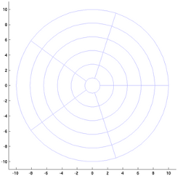 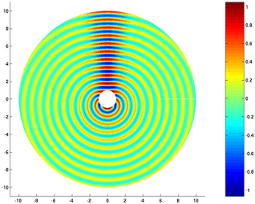
helmholtz mesh the real part of the scaterred field
Eigenmodes of a structure (thanks to Paolo Bertolo)¶
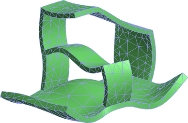
eigenmode of a vibrating structure You can look at a small movie showing the 24 first modes of the structure: (mpeg1, 4MB) oggetto_modes.mpeg or (mpeg4, 8MB) oggetto_modes.avi.
Contact with friction problem (Houari Khenous)¶
This example shows the deformation of a tire under its own weight. The tire is meshed with one layer of regular hexahedric cells (384 cells), whose geometric transformation is of order 2, and a Q2 FEM. This picture shows the Von Mises criterion on the deformed tire.
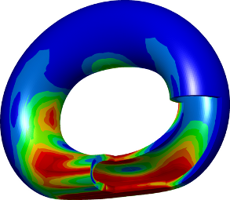
An animation of a (soft) elastic disk is also available (mpeg-4 movie, 4MB, 12secs) disk_in_contact.avi (mpeg1, 1MB) (A newmark scheme adapted for the unilateral contact condition).
Xfem cracks in a beam¶
Here we used XFem to handle cracks in a beam. XFem is an enrichment of the classical finite element space (a P2 FEM was used for this example) with a discontinuous function. Thanks to this function, the crack path does not have to follow the original mesh. Note how the crack cross elements on the mesh below. Four singular functions, which form a basis for asymptotical solution to the linear elasticity problem near the crack tips.
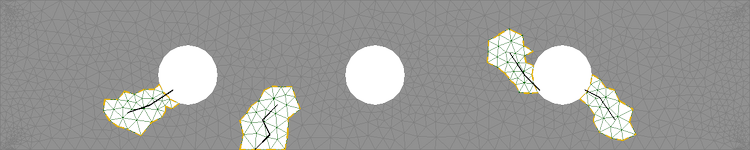
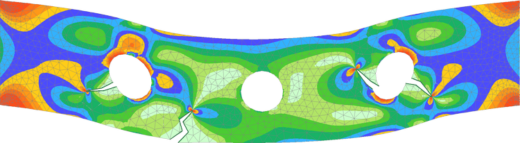
A 3D crack, made via level-set¶
In this example, the mesh was a simple cartesian mesh 20x20x1, and the crack geometry was defined implicitely via a levelset.
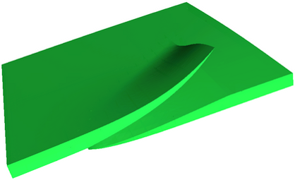
Large strain¶
In this example, a bar is twisted. Each step is solved with a Newton method. The material law is a “Ciarlet Geymonat” one. A P2 FEM is used. The source code for this example can be found in the tests/nonlinear_elastostatic.cc file of GetFEM++ package. This picture was made with OpenDX.
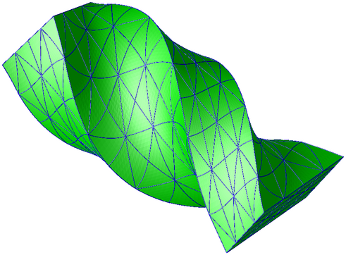
A short animation is also available: (mpeg-4 movie, 3MB) torsion.avi.
Shape and topological optimization¶
This images were obtained with the script interface/tests/matlab/demo_structural_optimization.m (Alassane SY and Yves Renard). It represents a shape optimization of a structure submitted to a vertical load at the right and clambed at the left. A (Xfem like) fictitious domain approach is used together with both a shape gradient and a topological gradient.
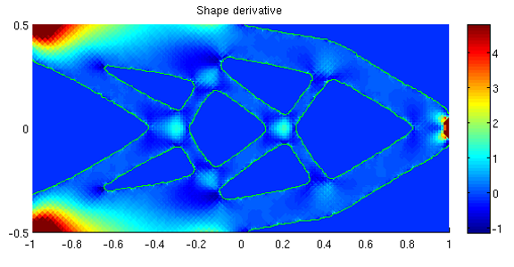 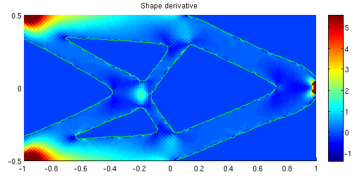
The first image corresponds to an initial structure with pre-existing holes. For the second one the holes are initiated by the topological optimization. The two following images correspond to a 3D case.
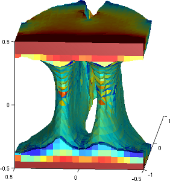 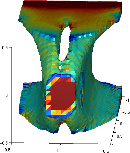
3D planetary gears¶
This image comes from the application developped by Konstantinos Poulios which is freely available at http://sourceforge.net/projects/gggears/. It is based on GetFEM++ and is intended to be a tool for easy, almost automatic, creation and calculation of gear transmissions.
{kind=link}

目次
前のトピックへ
次のトピックへ
Matlab source code for the tripod
Download
Main documentations
- GetFEM++ User documentation
- Python Interface
- Matlab Interface
- Scilab Interface
- Gmm++
- GetFEM++ project